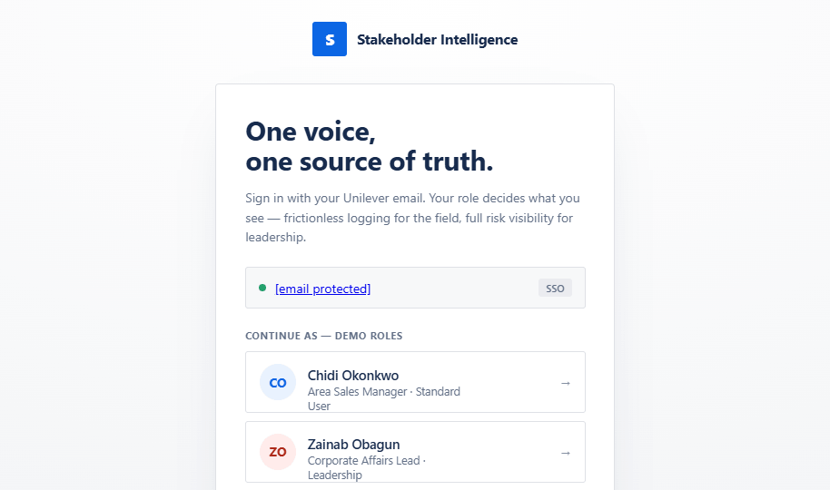
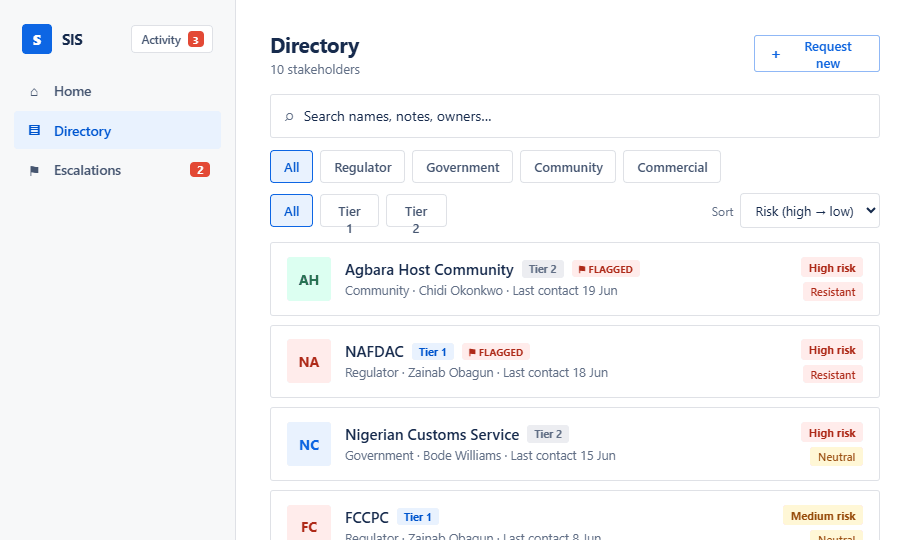
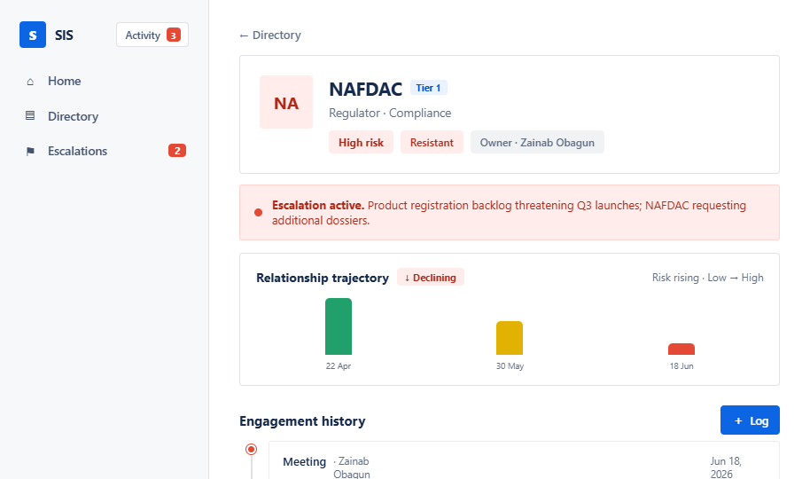
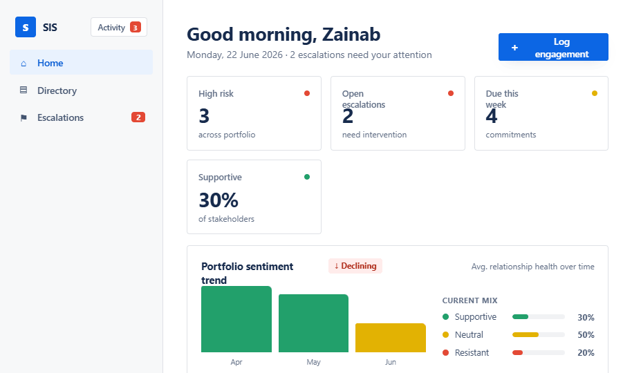

S
Stakeholder Intelligence
Product walkthrough
Stakeholder
Intelligence System
One voice, one source of truth.
Unilever Nigeria · Corporate Affairs & Sustainability
Atlassian design system
The shift
From scattered memory to one proactive source of truth
Today · reactive
—
Relationships held in spreadsheets & inboxes
—
Context lost when staff move on
—
Risks surface only after they escalate
—
No single view for leadership
→
SIS · proactive
✓
One master directory of every stakeholder
✓
Engagements logged in under 60 seconds
✓
Risk & sentiment quantified, trended, escalated
✓
Real-time visibility for leadership
How it works
Four connected building blocks
▤
Directory
A searchable master record of every regulator, government body, community & partner — no duplicates.
＋
Logging
Capture a meeting in under 60 seconds — notes, sentiment, risk, actions and follow-ups.
◔
Dashboards
Leadership sees risk exposure, sentiment trends, escalations & commitments in real time.
⚙
Governance
Superadmins approve new entries, edit taxonomy & reassign ownership to keep data clean.
Role-based access
One app, three tailored experiences
Your Unilever email is checked against the roles table — the right interface loads automatically, with no cognitive overload.
CO
Chidi Okonkwo
Area Sales Manager
STANDARD USER · FIELD
›
Mobile-first quick logging
›
"My Stakeholders" & commitments
›
Request new stakeholders
ZO
Zainab Obagun
Corporate Affairs Lead
LEADERSHIP
›
Risk & sentiment dashboard
›
Escalation board & workflow
›
Activity feed of Tier-1 moves
TA
Tobi Adeniyi
Managing Director
SUPERADMIN
›
Everything leadership sees
›
Approve / reject / merge requests
›
Taxonomy & ownership control
Who can access what
Access matrix
Capability
Field
Leadership
Superadmin
Directory & 360° profiles
●
●
●
Log engagements
●
●
●
"My Stakeholders" & requests
●
—
—
Risk dashboard & trends
—
●
●
Escalation board & workflow
—
●
●
Activity / "what's new" feed
—
●
●
Governance · approve, taxonomy, ownership
—
—
●
●
Full access
—
Hidden for this role
Sign-in & routing
Secure sign-in,
automatic role routing
1
Sign in with your Unilever email via SSO — no new password.
2
The system checks your email against the User Roles table.
3
The right experience loads — standard UI or hidden admin UI.

STANDARD USER · FIELD
Log a meeting in
under 60 seconds
✓
One prominent
Log engagement
button
✓
Quick-tap sentiment & risk — no typing
✓
Agreed actions & next-engagement date
✓
"My Stakeholders" & open commitments at a glance
Field home
Quick log
Master directory
Find any stakeholder in seconds
›
Search across names, notes, owners & engagements
›
Filter by category
and
priority tier
›
Sort by risk, last contact or owner
›
Risk & sentiment shown inline on every row

360° profile
Full context, one screen
›
Owner, category, priority & live status
›
Relationship trajectory
— sentiment & risk over time
›
Chronological feed of every engagement
›
Active-escalation banner when one is open

LEADERSHIP
Risk exposure at a glance
›
KPIs — high risk, open escalations, due this week
›
Portfolio sentiment trend
— improving or declining
›
Current Supportive / Neutral / Resistant mix
›
Upcoming commitments & recent Tier-1 activity
